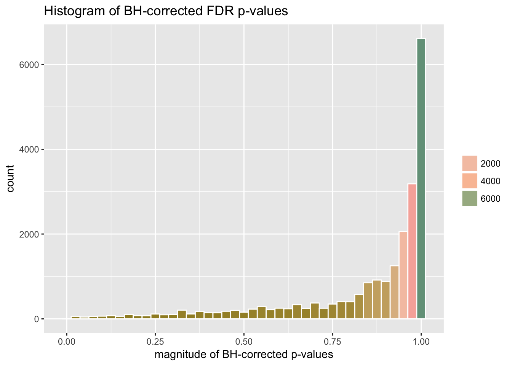
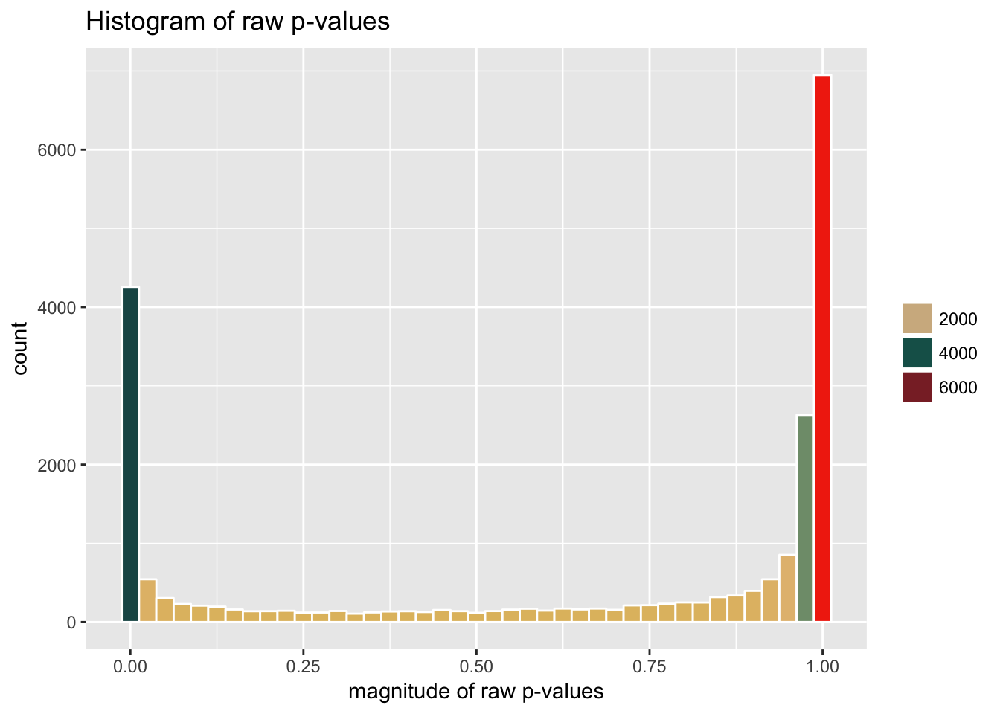
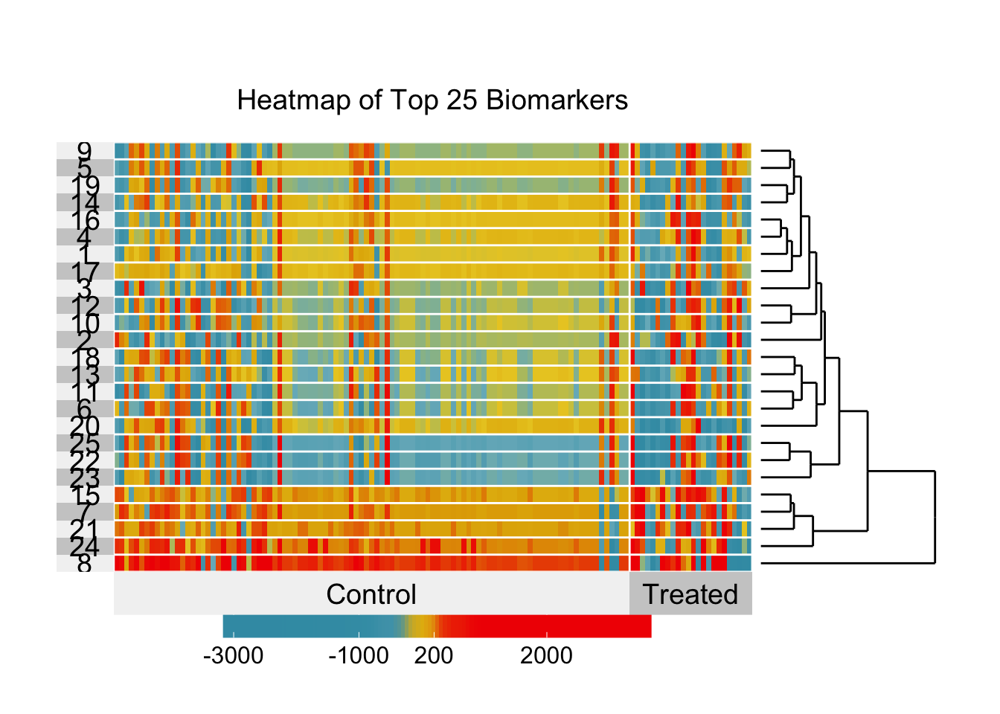
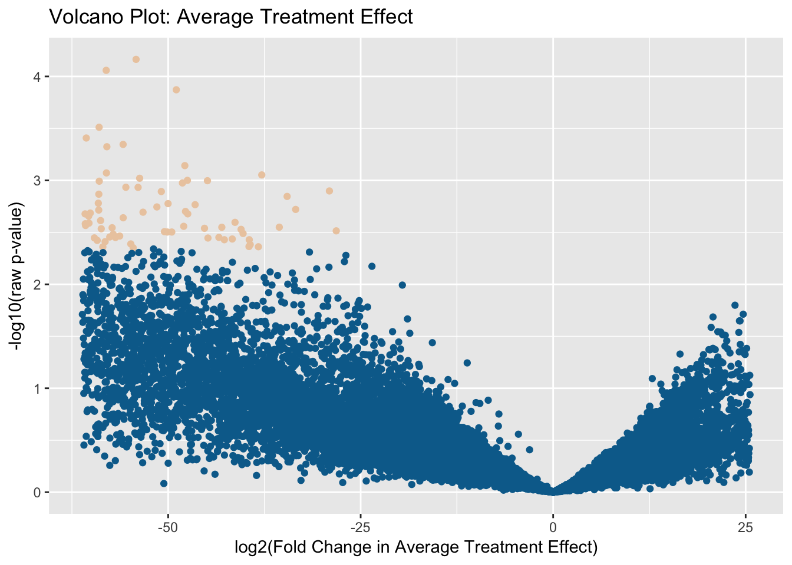

biotmle
exposureBiomarkers.RmdThe biotmle R package can be used to isolate biomarkers in two ways: based on the associations of genomic objects with an exposure variable of interest. In this vignette, we illustrate how to use biotmle to isolate and visualize genes associated with an exposure, using a data set containing microarray expression measures from an Illumina platform. In the analysis described below, targeted maximum likelihood estimation (TMLE) is used to transform the microarray expression values based on the influence curve representation of the Average Treatment Effect (ATE). Following this transformation, the moderated t-statistic of Smyth (Smyth 2004) is used to test for a binary group-wise difference (based on the exposure variable), using the tools provided by the R package limma).
For a general discussion of the framework of targeted maximum likelihood estimation and the role this approach plays in statistical causal inference, the interested reader is invited to consult van der Laan and Rose (2011) and van der Laan and Rose (2018). For a more general introduction to the principles of statistical causal inference, Pearl (2000) serves well.
First, we load the biotmle package and the (included) illuminaData data set:
library(dplyr)
library(biotmle)
library(biotmleData)
data(illuminaData)
suppressMessages(library(SummarizedExperiment))
"%ni%" = Negate("%in%")In order to perform Targeted Minimum Loss-Based Estimation, we need three separate data structures: (1) W, baseline covariates that could potentially confound the association of biomarkers with the exposure of interest; (2) A, the exposure of interest; and (3) Y, the biomarkers of interest. All values in W and A ought to be discretized, in order to avoid practical violations of the assumption of positivity. With the illuminaData data set below, we discretize the age variable in the phenotype-level data below (this can be accessed via the colData of the SummarizedExperiment object). To invoke the biomarker assessment function (biomarkertmle), we also need to specify a variable of interest (or the position of said variable in the design matrix). We do both in just a few lines below:
# discretize "age" in the phenotype-level data
colData(illuminaData) <- colData(illuminaData) %>%
data.frame %>%
dplyr::mutate(age = as.numeric(age > median(age))) %>%
DataFrame
# specify column index of treatment/exposure variable of interest
varInt_index <- which(names(colData(illuminaData)) %in% "benzene")The TMLE-based biomarker discovery process can be invoked using the biomarkertmle function. The procedure is quite resource-intensive because it evaluates the association of each individual potential biomarker (of which there are over 20,000 in the included data set) with an exposure of interest, while accounting for potential confounding based on all other covariates included in the design matrix. We demonstrate the necessary syntax for calling biomarkertmle below:
biomarkerTMLEout <- biomarkertmle(se = illuminaData,
varInt = varInt_index,
family = "gaussian",
g_lib = c("SL.glmnet", "SL.randomForest",
"SL.polymars", "SL.mean"),
Q_lib = c("SL.glmnet", "SL.randomForest",
"SL.nnet", "SL.mean")
)The output of biomarkertmle is an object of class bioTMLE, containing four new slots: (1) call, the call to biomarkertmle; (2) topTable, an empty slot meant to hold the output of limma::topTable, after a later call to modtest_ic; and (3) tmleOut, a data.frame containing the point estimates of the associations of each biomarker with the exposure of interest based on the influence curve representation of the Average Treatment Effect.
The output of biomarkertmle can be directly fed to modtest_ic, a wrapper around limma::lmFit and limma::topTable that outputs a biotmle object with the slots described above completely filled in. The modtest_ic function requires as input a biotmle object containing a data frame in the tmleOut field as well as a design matrix indicating the groupwise difference to be tested. The design matrix should contain an intercept term and a term for the exposure of interest (with discretized exposure levels). Based on the relevant statistical theory, it is not appropriate to include any further terms in the design matrix (n.b., this differs from standard calls to limma::lmFit).
After invoking modtest_ic, the resultant bioTMLE object will contain all information relevant to the analytic procedure for identifying biomarkers: that is, it will contain the original call to biomarkertmle, the result of running limma::topTable, and the result of running biomarkertmle. The statistical results of this procedure can be extracted from the topTable object in the bioTMLE object produced by modtest_ic.
This package provides several plotting methods that can be used to visualize the results of the TMLE-based biomarker discovery process.
The plot method for a bioTMLE object will produce a histogram of the adjusted p-values of each biomarker (based on the Benjamini-Hochberg procedure for controlling the False Discovery Rate) as generated by limma::topTable:

Setting the argument type = "pvals_raw" will instead produce a histogram of the raw p-values (these are less informative and should, in general, not be used for inferential purposes, as the computation producing these p-values ignores the multiple testing nature of the biomarker discovery problem):

Heatmaps are useful graphics for visualizing the relationship between measures on genomic objects and covariates of interest. The heatmap_ic function provides this graphic for bioTMLE objects, allowing for the relationship between the exposure variable and some number of “top” biomarkers (as determined by the call to modtest_ic) to be visualized. In general, the heatmap for bioTMLE objects expresses how the contributions of each biomarker to the Average Treatment Effect (ATE) vary across differences in the exposure variable (that is, there is a causal interpretation to the findings). The plot produced is a ggplot2 object and can be modified in place if stored properly. For our analysis:
varInt_index <- which(names(colData(illuminaData)) %in% "benzene")
designVar <- as.data.frame(colData(illuminaData))[, varInt_index]
designVar <- as.numeric(designVar == max(designVar))
# build heatmap
heatmap_ic(x = limmaTMLEout, left.label = "none", scale = TRUE,
clustering.method = "hierarchical", row.dendrogram = TRUE,
design = designVar, FDRcutoff = 0.05, top = 25)
The heatmap produced in this way is actually a form of supervised clustering, as described more generally (“supervised distance matrices”) by Pollard and van der Laan (2008), wherein the notion of deriving clustering procedures from the results of supervised learning methods is formulated. Since the heatmap is based on the contributions of observations to the efficient influence function (EIF) of the target parameter, it directly visualizes the degree to which each biomarker informs the difference (due to the treatment effect) represented by the average treatment effect.
The volcano plot is standard graphical tools for examining how changes in expression relate to the raw p-value. The utility of such plots lies in their providing a convenient way to identify and systematically ignore those genomic objects that have extremely low p-values due to extremely low variance between observations. The volcano_ic function provides much of the same interpretation, except that the fold change values displayed in the x-axis refer to changes in the contributions of each biomarker to the Average Treatment Effect (in standard practice, for microarray technology, these would be fold changes in gene expression). The plot produced is a ggplot2 object and can be modified in place if stored properly. For our analysis:

## R version 3.6.1 (2019-07-05)
## Platform: x86_64-pc-linux-gnu (64-bit)
## Running under: Ubuntu 18.04.3 LTS
##
## Matrix products: default
## BLAS: /usr/lib/x86_64-linux-gnu/openblas/libblas.so.3
## LAPACK: /usr/lib/x86_64-linux-gnu/libopenblasp-r0.2.20.so
##
## locale:
## [1] LC_CTYPE=en_US.UTF-8 LC_NUMERIC=C
## [3] LC_TIME=en_US.UTF-8 LC_COLLATE=en_US.UTF-8
## [5] LC_MONETARY=en_US.UTF-8 LC_MESSAGES=en_US.UTF-8
## [7] LC_PAPER=en_US.UTF-8 LC_NAME=C
## [9] LC_ADDRESS=C LC_TELEPHONE=C
## [11] LC_MEASUREMENT=en_US.UTF-8 LC_IDENTIFICATION=C
##
## attached base packages:
## [1] parallel stats4 stats graphics grDevices utils datasets
## [8] methods base
##
## other attached packages:
## [1] SummarizedExperiment_1.14.1 DelayedArray_0.10.0
## [3] BiocParallel_1.18.1 matrixStats_0.55.0
## [5] Biobase_2.44.0 GenomicRanges_1.36.0
## [7] GenomeInfoDb_1.20.0 IRanges_2.18.2
## [9] S4Vectors_0.22.0 BiocGenerics_0.30.0
## [11] biotmleData_1.8.0 biotmle_1.9.0
## [13] dplyr_0.8.3 BiocStyle_2.12.0
##
## loaded via a namespace (and not attached):
## [1] Rcpp_1.0.2 lattice_0.20-38
## [3] listenv_0.7.0 assertthat_0.2.1
## [5] rprojroot_1.3-2 digest_0.6.21
## [7] foreach_1.4.7 R6_2.4.0
## [9] nnls_1.4 backports_1.1.5
## [11] evaluate_0.14 ggplot2_3.2.1
## [13] pillar_1.4.2 zlibbioc_1.30.0
## [15] rlang_0.4.0 lazyeval_0.2.2
## [17] Matrix_1.2-17 rmarkdown_1.16
## [19] pkgdown_1.4.1 labeling_0.3
## [21] desc_1.2.0 stringr_1.4.0
## [23] RCurl_1.95-4.12 munsell_0.5.0
## [25] compiler_3.6.1 xfun_0.10
## [27] pkgconfig_2.0.3 superheat_0.1.0
## [29] globals_0.12.4 htmltools_0.4.0
## [31] tidyselect_0.2.5 tibble_2.1.3
## [33] GenomeInfoDbData_1.2.1 bookdown_0.14
## [35] codetools_0.2-16 doFuture_0.8.1
## [37] future_1.14.0 tmle_1.3.0-2
## [39] crayon_1.3.4 MASS_7.3-51.4
## [41] bitops_1.0-6 grid_3.6.1
## [43] gtable_0.3.0 magrittr_1.5
## [45] scales_1.0.0 stringi_1.4.3
## [47] XVector_0.24.0 fs_1.3.1
## [49] limma_3.40.6 ggdendro_0.1-20
## [51] ggsci_2.9 iterators_1.0.12
## [53] tools_3.6.1 glue_1.3.1
## [55] purrr_0.3.2 yaml_2.2.0
## [57] colorspace_1.4-1 SuperLearner_2.0-25-9000
## [59] BiocManager_1.30.4 memoise_1.1.0
## [61] knitr_1.25Pearl, Judea. 2000. Causality: Models, Reasoning, and Inference. Cambridge University Press.
Pollard, Katherine S, and Mark J van der Laan. 2008. “Supervised Distance Matrices.” Statistical Applications in Genetics and Molecular Biology 7 (1). De Gruyter.
Smyth, Gordon K. 2004. “Linear Models and Empirical Bayes Methods for Assessing Differential Expression in Microarray Experiments.” Statistical Applications in Genetics and Molecular Biology 3 (1). Walter de Gruyter: 1–25. https://doi.org/10.2202/1544-6115.1027.
van der Laan, Mark J., and Sherri Rose. 2011. Targeted Learning: Causal Inference for Observational and Experimental Data. Springer Science & Business Media.
van der Laan, Mark J, and Sherri Rose. 2018. Targeted Learning in Data Science: Causal Inference for Complex Longitudinal Studies. Springer Science & Business Media.